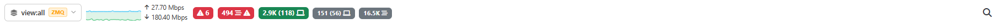

Руководство по пользовательскому интерфейсу
После запуска ntopng вы можете просмотреть GUI. По умолчанию доступ к GUI можно получить из любого веб-браузера по адресу http://<ntopng IP>:3000/. Другой порт можно указать в качестве параметра командной строки во время запуска ntopng. Первая страница, которая всегда выскакивает, содержит форму входа — при условии, что пользователь не решил отключить аутентификацию при запуске.

Страница входа
Логин по умолчанию
имя пользователя |
администратор |
пароль |
администратор |
При первом входе страница просит сменить пароль по умолчанию: дважды введите новый пароль. (от 5 до 128 символов, отличается от администратор) и, если хотите, выберите язык интерфейс. Пока пароль не будет изменен, каждая вторая страница ведет обратно сюда; после перемены ты уходишь на страницу, которую вы просили. Выход из системы уходит, не меняя его.
Права администратора предоставляются пользователю администратор. Если неаутентифицированный пользователь попытается получить доступ к определенному URL-адресу ntopng, система перенаправит браузер на страницу входа, а затем, после успешной аутентификации, на запрошенный ресурс. Ntopng GUI веб-страницы имеют общую структуру, с которой пользователь скоро познакомится. Страницы в основном состоят из постоянно расположенной строки состояния и некоторого основного содержимого.

Панель заголовка
В строке заголовка отображается информация о состоянии ntopng, в частности:
В настоящее время выбранный интерфейс.
Диаграмма пропускной способности интерфейса Up/Down.
Серия цветных значков.
Кнопка «Поиск» (или Ctrl+Ф), который находит страницы, настройки, хосты и многое другое (см. Поиск).
Звонок уведомлений и меню администрирования пользователей.
Цветные цвета указывают состояние многих компонентов в ntopng. Значки на рисунке выше имеют следующее значение (слева направо):
Желтый треугольник с Задействованные оповещения считать.
Желтый треугольник с предупреждением Предупреждаемые потоки считать.
Красный треугольник с ошибкой Предупреждаемые потоки считать.
Зеленый значок с количеством активных локальных хостов.
Серый значок с количеством активных удаленных хостов.
Серый значок с количеством активных устройств.
Серый значок с количеством активных потоков.
Красные значки часто являются симптомами проблем. Например, если значки потоков руды активных хостов красные это означает, что хеш-таблицы ntopng заполнены и некоторая статистика может быть потеряна (здесь можно найти дополнительную информацию по этой теме).
Слева всегда доступна строка меню для навигации по ntopng страницам. Записи в строке меню изменяются в зависимости от выбранного в данный момент интерфейса. Системный интерфейс имеет пункты меню, которые отличаются от других интерфейсов. Ниже будет рассмотрена каждая отдельная запись строки меню.
Пункт раскрывающегося меню «Интерфейсы» на верхней панели инструментов содержит списки всех интерфейсов, которые в данный момент доступны. контролируется ntopng. Среди всех перечисленных интерфейсов есть галочка, указывающая, что интерфейс выбран в данный момент. Специальный интерфейс всегда присутствует в ntopng, Системный интерфейс. Большая часть данных и информации, показанных в веб-странице ntopng GUI, относится к выбранному в данный момент интерфейс. Любой из перечисленных интерфейсов можно выбрать, просто щелкнув по его названию.

Раскрывающееся меню «Интерфейсы»
Выпадающее меню используется только для переключения между выбранными интерфейсами, а также для просмотра статистика трафика интерфейса.
Если отслеживаются два или более интерфейсов, в раскрывающемся списке также отображаются Обзор запись, которая объединяет данные всех локальных интерфейсов в одном представлении.